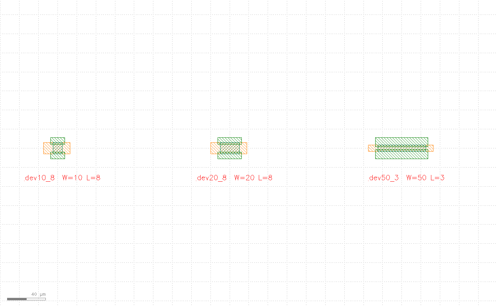
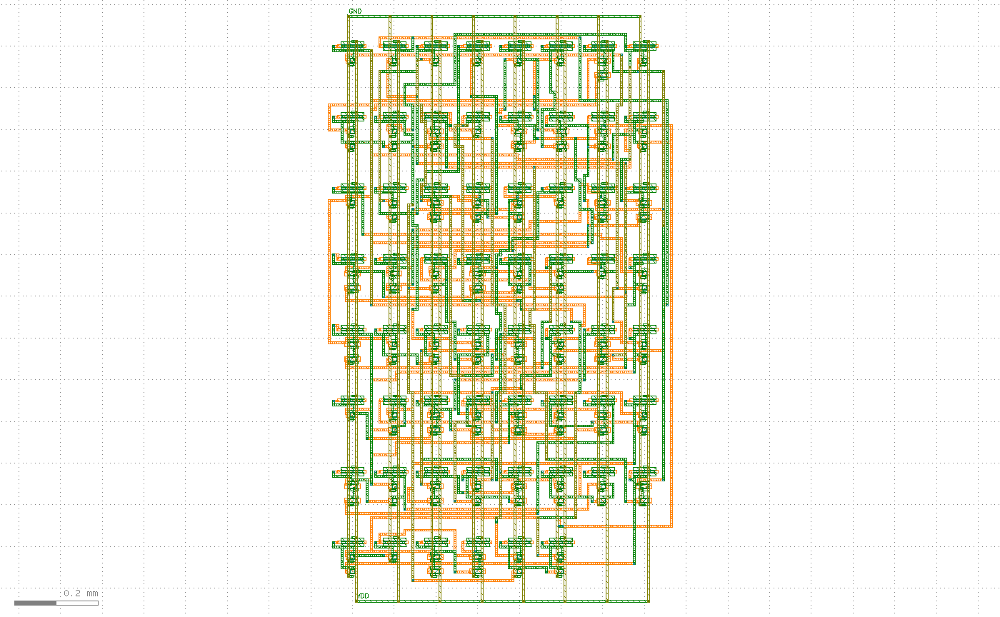
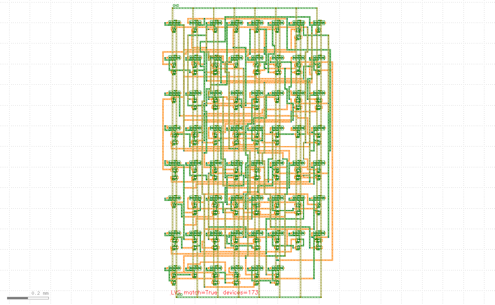

Chat Case Study: Wiring a Custom Device into a Digital Flow, All the Way to LVS Match
Three requests, three real tool-driven stages: fit a custom device's exemplar geometry into a parametric PCell, place and route it from a netlist, then run live LVS to confirm the layout matches the netlist exactly.
Running a fit screening over your 4 exemplar sizes (a synthetic back-gate device, W=10/50 µm × L=4/8 µm, both parameters varied independently): every role edge gets a linear regression against the parameters and is classified linear (parameter-driven), constant (doesn't move), or unexplained (the fitter can't explain it -- your call). The screening came back clean, so I built the fit table and registered it as a real PCell (demobg), then drew 3 variants to prove the parametrization is real: dev10_8 is the exemplar point itself, dev20_8 interpolates along W, and dev50_3 extrapolates along L (outside the exemplar range).

demobg PCell at three parameter sets. The fit screening found 14 of 16 edges linear, 2 constant, and 0 unexplained -- the parametrization is fitted, not hard-coded.The netlist is a bundled 4-bit adder (62 gates, 173 device instances, 96 nets). The row/column count and row pitch aren't guessed -- they're derived from the netlist itself: 62 gates → an 8×8 grid, row pitch = device stack height + routing channel, worked out to 170 µm. After batch-placing all 173 fitted PCell instances, the signal nets among those 96 go to the FlexDR detailed router on a 3-layer stack; VDD/GND ride the power grid separately, outside the "signal net" count.

markers=0). The power ring (GND/VDD) runs 166 PDN vias; the signal nets add another 200 cross-layer vias.Not "looks connected" -- KLayout's native connectivity extractor is the judge: it extracts nets from the real geometry just drawn (metal-layer connectivity + via crossings), reconciles them one by one against the 96 nets declared in step two, then does a device-level netlist comparison across all 173 devices. The extractor's connectivity rules are derived from the same profile the router used, but the extraction itself is KLayout's native engine -- not the router grading its own work. The real result gets written back onto the layout so it's easy to check by eye:
Real result: match=True, all 173 devices reconciled -- the connectivity drawn in the layout matches the declared netlist exactly.

LVS match=True devices=173 -- placed at the layout's real bounding box, not pre-staged decoration.Want the full step-by-step version with the fit formulas and zoomed-in detail shots? See the custom device tutorial. Full DRC/LVS capability → Features · DRC · LVS.